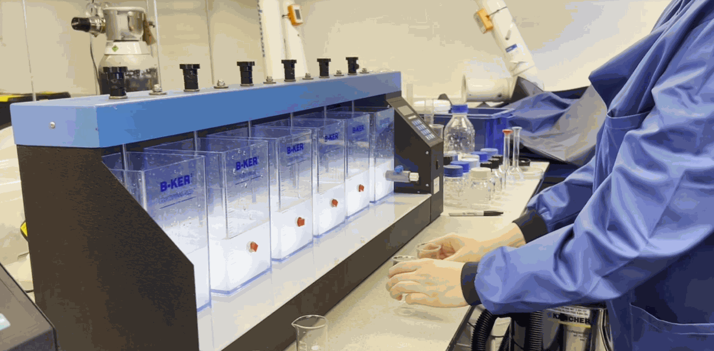
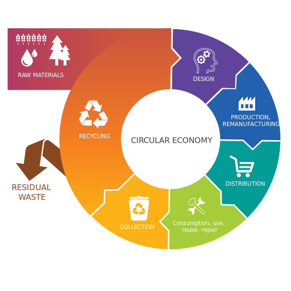
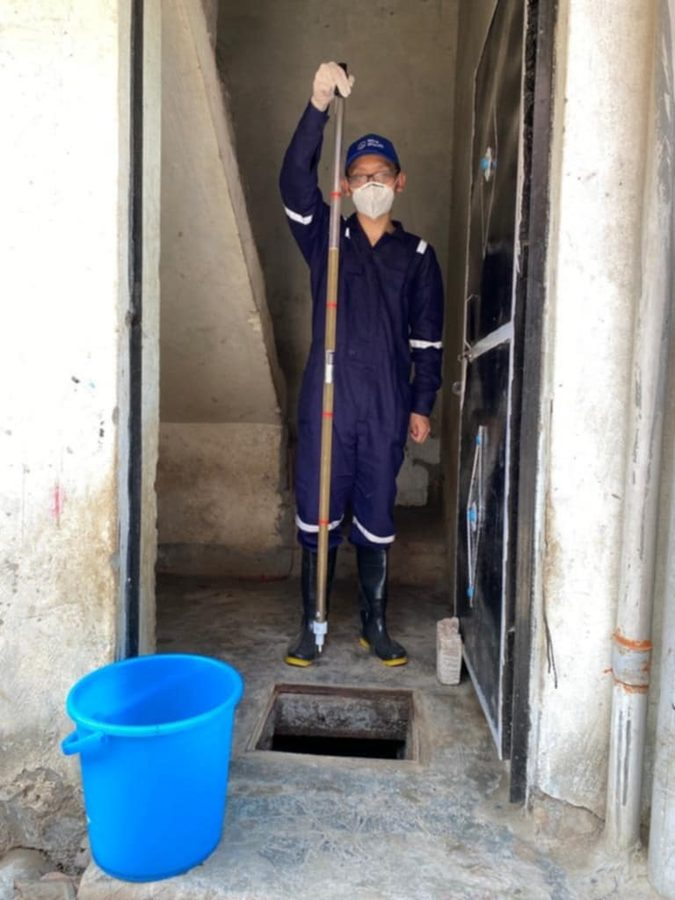

The Water, Public Health and Environmental Engineering (WPE) group organises its research around four interconnected themes — Indoor Air & Healthy Buildings, BioResources & Circular Economy, Sanitation & WASH, and Water — supported by a cross-cutting capability in Experimental, Microbiological, and Computational Methods.
Our interdisciplinary approach combines building physics, fluid mechanics, environmental microbiology, analytical chemistry, public health engineering, and social science to deliver practical solutions with global impact.
Indoor Air Quality and Airborne Infection

Engineering Healthy, Low-Carbon Buildings
With people spending up to 90% of their time indoors, our Indoor Air research theme investigates how respiratory pathogens and air pollutants move through buildings, how ventilation and air-cleaning technologies reduce exposure, and how net-zero building retrofits can protect occupant health.
Anchored by our walk-in controlled aerobiology chamber and high-performance CFD modelling, our work has directly shaped UK SAGE, NHS, CIBSE, and World Health Organization ventilation guidance.
Research Areas
Airborne Infection & Bioaerosols
Chamber experiments, single-particle microfluidic bioaerosol detection, and QMRA modelling across airborne and surface-contact routes.
Ventilation & Air Cleaning
Optimising hospital and school ventilation, HEPA filtration, and germicidal UV-C (254 nm and 222 nm far-UVC) systems.
Building Physics & Net Zero
Balancing indoor air quality and thermal comfort with low-carbon heating, heat pumps, and building energy efficiency.
Sensing & Environmental Justice
Deploying low-cost indoor air quality sensor networks in schools and homes to address exposure inequalities.
Key Projects
Modelling Airflow Around and Within Buildings
High-fidelity CFD and real-time data assimilation for natural and mechanical ventilation in complex buildings.
OngoingHealthy Buildings Network & Class-ACT
Evaluating CO₂ monitoring, HEPA air cleaners, and UV-C interventions across 30 Bradford primary schools and national networks.
Ongoing
Hospital Environment Control, Optimisation and Infection Risk Assessment (HECOIRA)
Redesigning hospital ward ventilation systems to reduce nosocomial pathogen transmission while maintaining energy efficiency.
CompletedGroup Director & Theme Contact

Associate Professor Marco-Felipe King
Director of WPE; Associate Professor in Building Engineering and Infection Transmission; Co-Director, EPSRC CDT in Future Fluid Dynamics
Associate Professor King investigates how ventilation strategies, building design, and occupant behaviour govern indoor air quality and pathogen transmission. His work combines computational fluid dynamics (CFD) modelling, Bayesian inference, and experimental studies in the Leeds aerobiology chamber to reduce healthcare-associated and community infections in partnership with the NHS, government departments, and industry.
BioResources and Circular Economy

Transforming Waste into Clean Energy, Nutrients, and Materials
The BioResources and Circular Economy theme develops biological, chemical, and systems-level solutions to recover biomethane, biohydrogen, nutrients, protein, and secondary construction materials from organic and industrial waste streams.
From the £1.75M Ayrton Challenge BioCool off-grid milk-cooling programme in Uganda to circular economy policy for offshore wind infrastructure and the UK foundation industries, we link bioprocess engineering with circular governance.
Research Areas
Waste Valorisation & Biogas
Anaerobic digestion, biomethane upgrading, biohydrogen, and hydrothermal carbonisation of agricultural and municipal wastes.
Microalgae & Duckweed Biorefineries
Harnessing photobioreactors, microalgae, and duckweed to capture carbon, remove micropollutants, and recover protein.
Nutrient Recovery & Digestate
Extracting nitrogen, phosphorus, and safe biofertilisers from wastewater, faecal sludge, and anaerobic digestate.
Circular Economy & Infrastructure
Whole-system resource flows, offshore wind decommissioning, and circular transitions in the foundation industries.
Sanitation and WASH

Safely Managed, Climate-Resilient Sanitation and Hygiene
The Sanitation and WASH theme works across the entire sanitation service chain — from containment and emptying to treatment, governance, and public finance — in rapidly growing cities and rural communities across Africa, South and Southeast Asia, and the UK.
Home to the Shit Flow Diagram (SFD) and leads on the FCDO WASH Systems for Health and DFAT EMISI programmes, our team combines public health engineering with political economy and climate-resilience modelling.
Water

Water Supply, Treatment, Hydraulics, and Flood Resilience
The Water theme works across the full water cycle — from global flood risk, river hydrodynamics, and pressurised pipeline transients to drinking-water microplastics removal, constructed wetlands, and subsurface contaminant geochemistry.
Closely integrated with water@leeds (directed by Prof. Martin Tillotson, with Prof. Mark Trigg as Associate Director), we partner with utilities, regulators, and international agencies to build resilient water systems.
Explore WaterExperimental, Microbiological & Computational Methods

One Shared Toolkit Across All Four Themes
Physics tells us how the world should behave; experimental and field data tell us how it actually behaved. Across indoor air, water, sanitation, and bioresources, our group shares specialist capabilities in walk-in chamber experimentation, Class II environmental microbiology, automated analytical chemistry, high-performance CFD, physics-informed machine learning, Bayesian calibration, and Quantitative Microbial Risk Assessment (QMRA).
Cross-Theme Collaborative Research
Our research themes frequently collaborate on interdisciplinary programmes that address interconnected environmental and public health hazards.

Microplastics: From Source to Solution
Detecting microplastics by Nile Red fluorescence and FTIR/Raman spectroscopy, tracing their fate in agricultural soils and compost, and optimising coagulation–flocculation removal in drinking-water treatment works.
Learn More
Circular Bioresources & Low-Carbon Infrastructure
Connecting circular economy governance for wind energy and foundation industries with anaerobic digestion, nutrient recovery from wastewater, and valorisation of mineral wastes in construction materials.
Learn More
Climate-Resilient Urban Environmental Health
Combining urban flood-risk modelling and multiphase CFD with field pathogen sampling to understand how extreme weather, flooding, and housing quality affect sanitation systems and infection risk.
Learn More